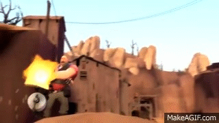
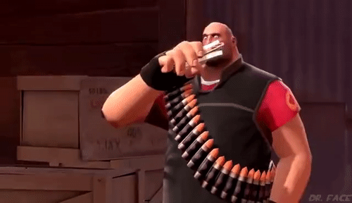
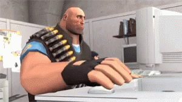

Instructions
So you have come to the third part of a sandwich, making it. The final being eating of course!
(please laugh)

Now, to make the sandwich; you must first take your bread and lay them next to each other, make sure to place it on your cutting board or any other clean surfaces! You must take your mayonnaise after you've placed the bread, and slather it all over one of the slices of bread. Congratulations, you now have your bottom! Now, for the other slice of bread which will be your top, squirt ketchup and mustard across the second slice of bread and your bread is complete!
Now, for the interior of the sandwich, place your thick slice of ham at the bottom, next cut a thick slice of cheese and place it ontop of the ham. Good job, you're now halfway there! Next, place your three tomatoes within your sandwich, before placing overtop your slice of lettuce.
Optional Instructions
Now, you are going to roast your sandwich with the flamethrower, it will give a nice and crispy flavor unlike any other, and cook your raw ham. For this, I have the help from my friend Pyro, who is a valiant flamethrower owner and regularly uses it.

Once you have cooked your sandwich, take our the 400,000 bullets from earlier and open fire on your sandwich so it'll be nicely oxygenated when you're eating it and your cheese will be swiss even if its not. For this step, I used my treasured Minigun, Sasha.

Completion
Congratulations, you now have a glorious sandwich to consume, complete your instructions by eating the sandwich.

I hope you enjoyed this manual for sandwich making, next time I will show you how to make your bananas more zesty. Thanks again!
